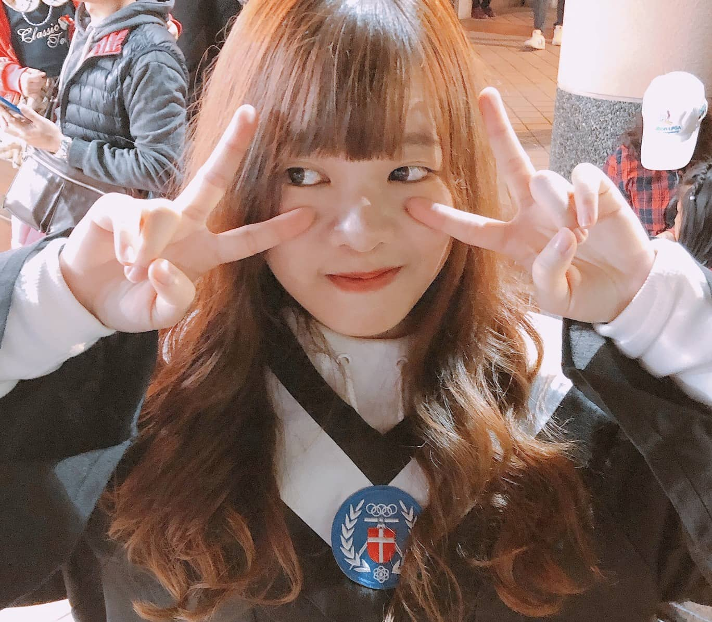
基本資訊
- 姓名：洪千雯
- 系級：資管四甲
- 介紹：一個把資管系當醫學系在念的女子
專業職能
點我 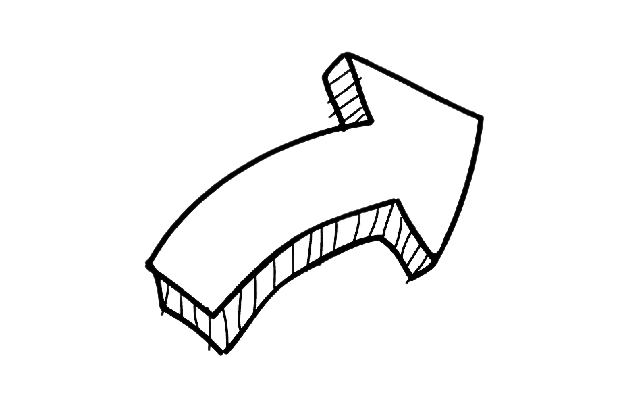Premiere 90%
Photoshop 80%
Office 80%
HTML 80%
CSS 70%
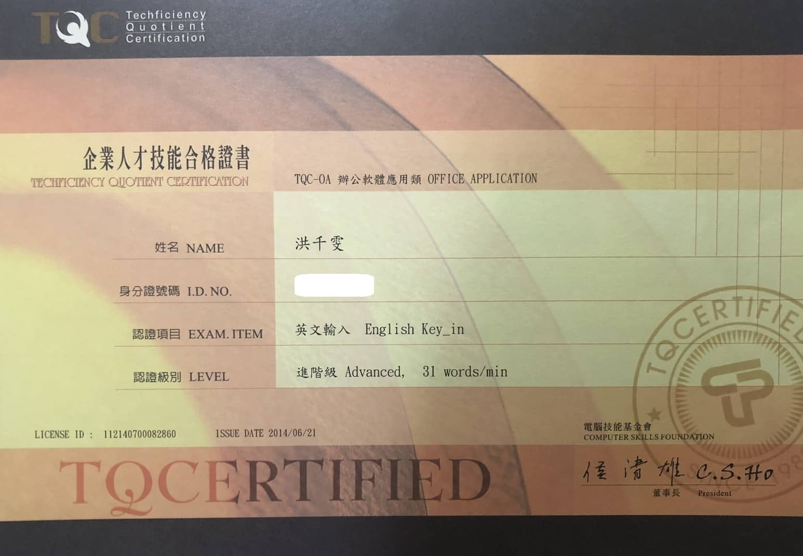
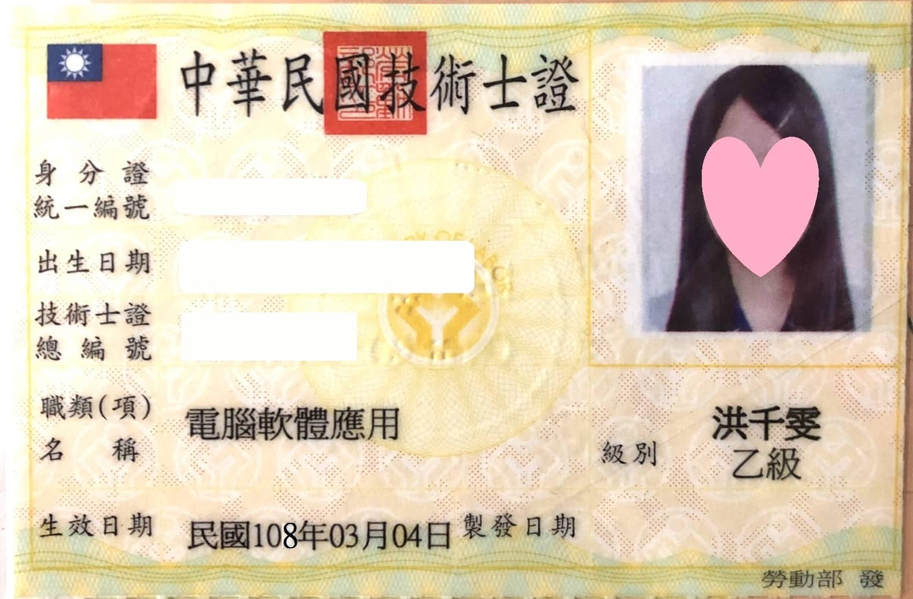
SQL 60%
JS 50%
C# 50%
Ai 30%
個人經歷
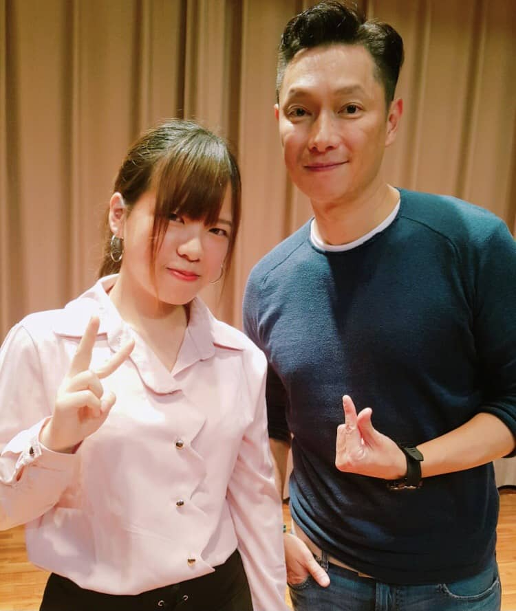
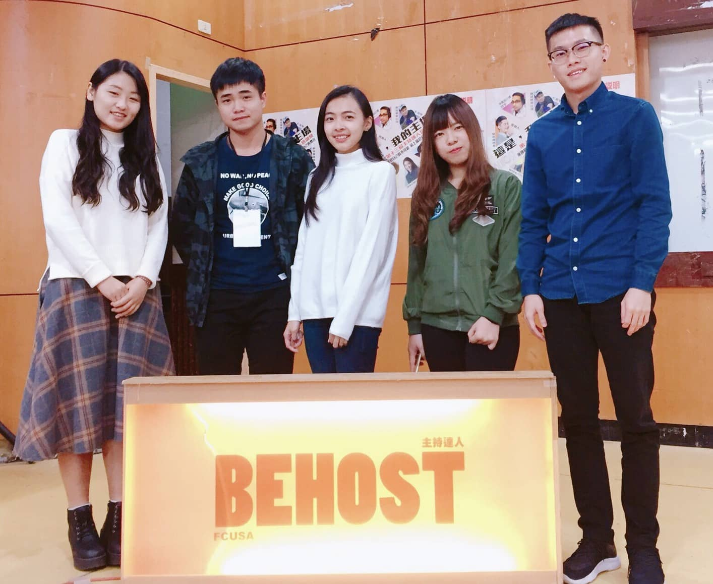
舞台人才培訓營
這是一個可以訓練自己台風與口條
的活動，每個人都必須拿著當天領
到的文稿到台上發揮，最後會選出
20位參與的同學到廣播電台參訪。
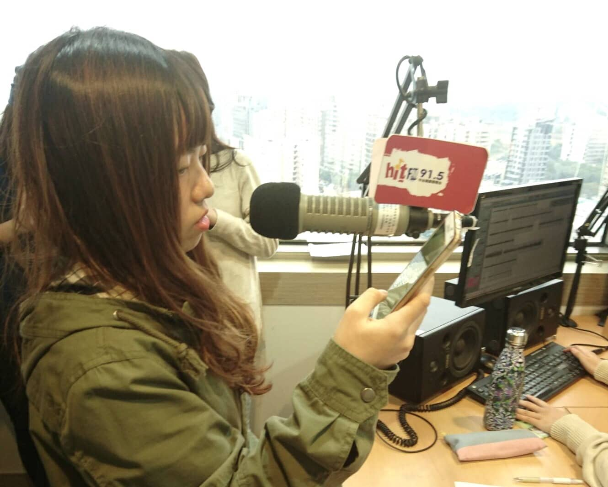
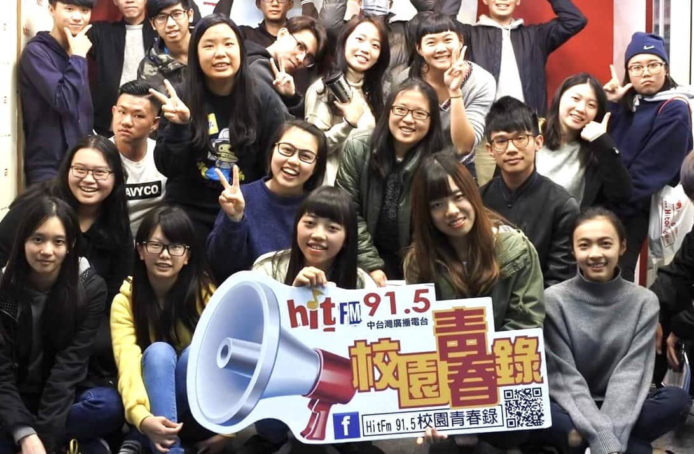
廣播電台參訪
第一次去到了廣播電台
，除了可以體驗廣播DJ
的工作之外，還可以一
眼目睹DJ們的真面目
，是個很新奇的體驗。
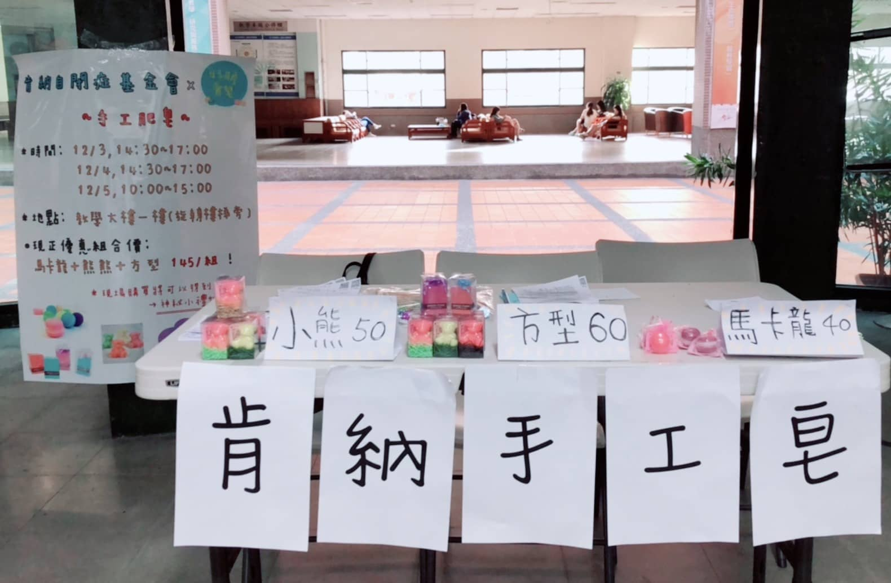
肯納手工皂義賣
與小組同學在校內擺攤舉行
義賣活動，替自閉症患者將
他們手作的香皂賣出，從事
公益活動的同時，也學習到
了銷售及產品宣傳的技巧。
統一超商打工
在超商打工這1年半的時
間中，可以學習如何應對
進退、處理問題、與同事
之間的團隊合作等等，趁
著犯錯還能被原諒的年紀
多多學習，是作為出社會
前一個很好的經歷。
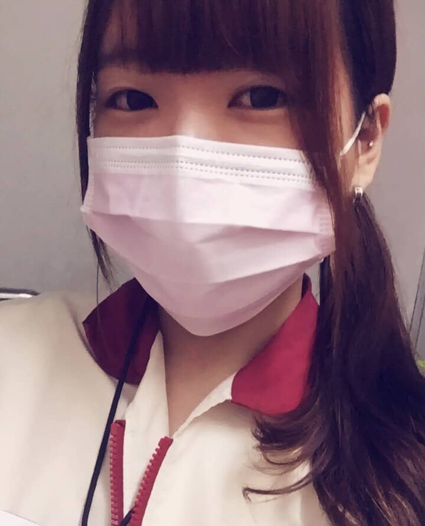

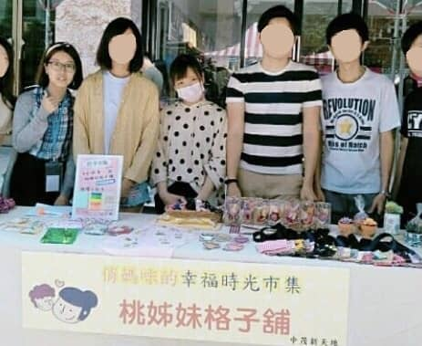
參與志工服務
這是一個幫助單親家庭將手工藝品
出售的活動，第一次花 1 0 個小時
站在大街上叫賣，過程中非常累人
，但是最後看到我們分配到的商品
被售出，努力也值得了。
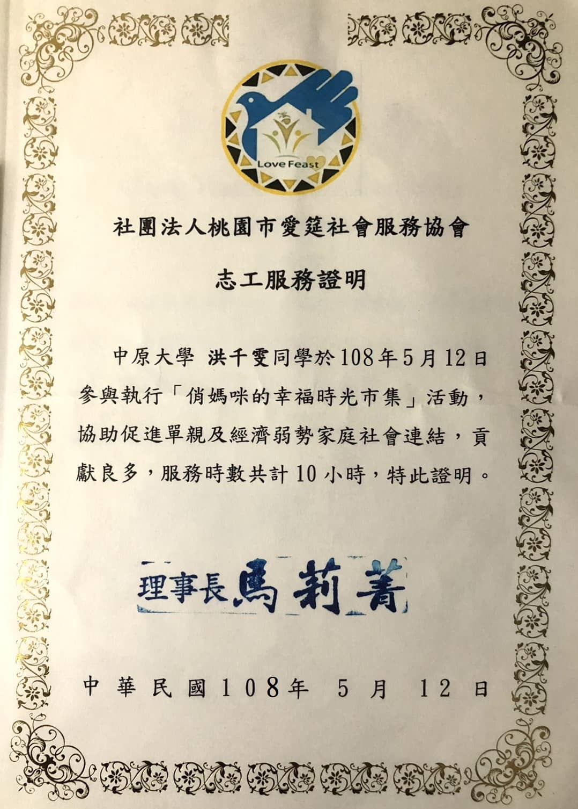
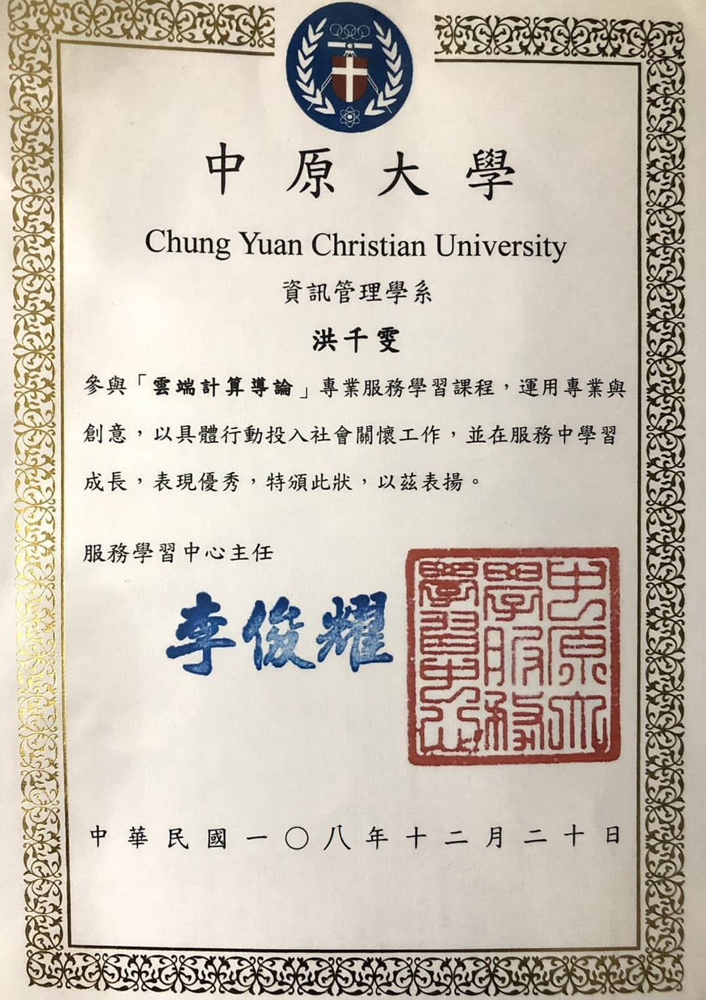
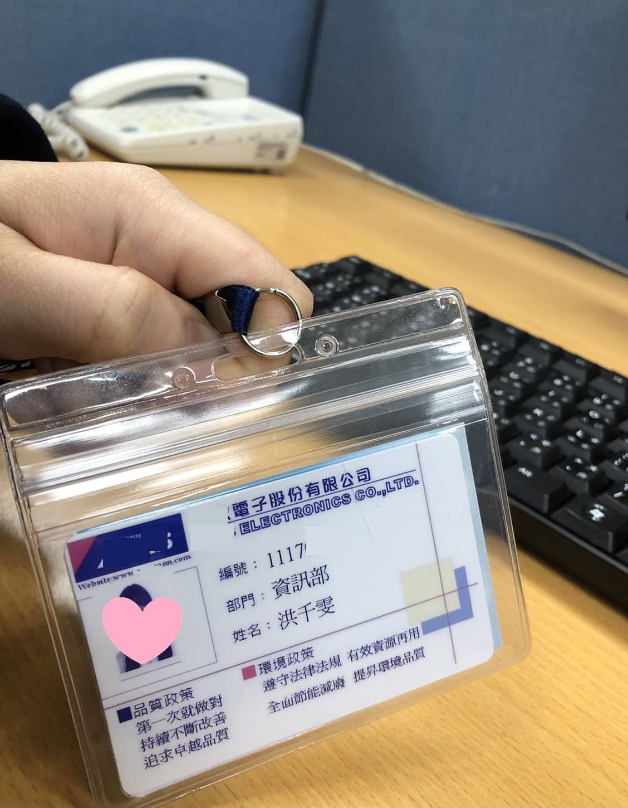
行政工讀
在等待畢業的這段期間，先去找
了與科系相關的工作試試水溫，
幫助主管處理業務上的資料、維
護資料庫等等，在這之中也能先
熟悉職場中可能會遇到的問題。
聯絡管道